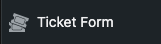
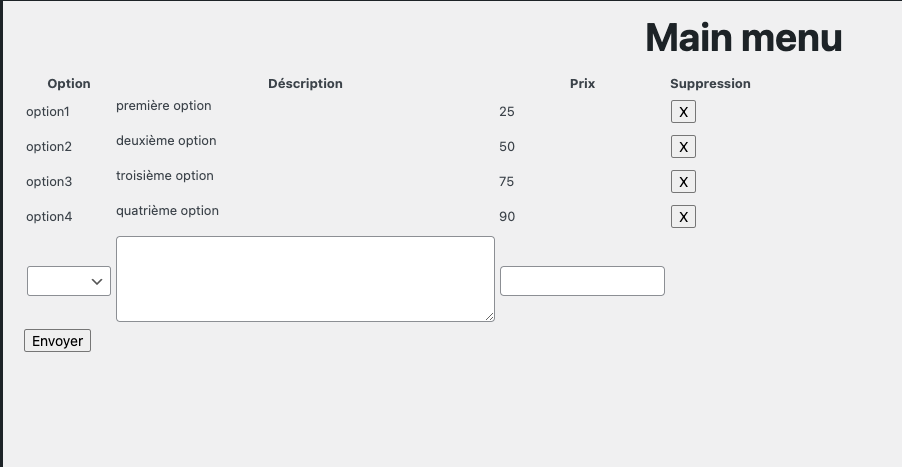

Conférence
- Cette extension vous permet de pouvoir créer et gérer vos billets.
- Elle permet également de pouvoir lister les commandes passées sur votre site.
- Elle affiche le formulaire de afin d'acheter les billets pour les différentes conférences.
Lors de l'activation de l'extension la base de donnée est automatiquement créée.
La page est également créer automatiquement et le shortcode est aussi implémenté dans la page lors de sa création.
Création des tickets
Dans le Back Office cliquez sur l'onglet de l'extension.

Vous pouvez renseigner les différentes caractéristiques des vos billets dans le formulaire s'affichant dans la fenêtre principale. Ce menu vous permet également de pouvoir supprimer les billet afin des pouvoir les remettre à jour.
Vous pouvez renseigner jusqu'à 5 options de billets différents. Il vous est impossible de pouvoir réutiliser une option si elle est déjà utilisée.

Achat des billets
Plusieurs "call to action" sont disposés dans le site et redirigent vers la page billetterie.
Pour faire apparaitre le formulaire d'achat il faut taper le shortcode suivant : [ticket-form]